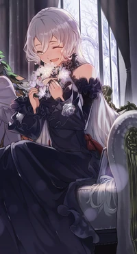

I Was Caught up in a Hero Summoning, but That World Is at Peace, otherwise known as Yuusha Shoukan ni Makikomareta kedo, Isekai wa Heiwa deshita YuuShou or Isekai at Peace, follows Miyama Kaito who suddenly appears in a different world, after being caught up in a Hero Summoning. And of course, he isn't the Hero, but it's another guy……and while being very cautious and scared of the cliché of the cliché-like development, he was thrown into the maelstrom of war……or not. The Demon Lord? It was defeated a thousand years ago. Hero? He's just the main actor in a festival. Nobles? They're kindly taking care of us. The Demon Race? They have good relationships with Humans. Wars? It's already 800 years since the last one. Monsters? The Guild and Order of Knight are taking care of them. Return to Earth? It is eventually No-Risk. What is he planning after being caught up into this? He is gonna enjoy the life in a different world as much as he want to, go on a cultural exchange and sightseeing, and after experiencing the festival that is only held once every ten years……He shall go home safely. The other world was――at Peace. A kind world where the three races, the Spirit World's Magical Races, the Celestial World's Divine Races, the Mortal World's Human Races, they are kind neighbors to each other, with everyone living a peaceful and fulfilling life. But although he wished to peacefully spend a year before his return, for some reason, the heavyweights of this world keeps gathering around him, and…….
Characters
World Creator
Six King

Gods
Symphonia Kingdom